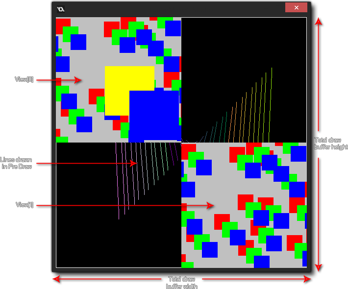

Draw GUI
Event
The Pre Draw and Post Draw events are part of the
Draw Event category. However,
unlike the other Draw events these draw directly to the
screen buffer, which will be the size of the combined screen space
for all views currently visible, or the window size if only using
one view or none at all. The image below illustrates this:

So, if you are using the Pre or Post draw event, you are drawing to
the full screen render target which will have the same size as the
window to which all views are made to fit. If you have no views
active, this is instead set to the size of the window itself.
The Pre Draw event is triggered before any other draw
event, and in it you can set values, set draw properties and even
draw things without worrying about the views or the size of the GUI
layer (the GUI layer size may be the same as the screen buffer, but
it may not since you can set the GUI resolution in code).
It is worth noting that this event happens before the screen
buffer is cleared meaning that if you do not switch
off view clearing in the room editor then nothing that is drawn
in the Pre Draw event will be seen, as the first view will clear
it. If you want to be able to see through the views themselves, or
you are not using views at all, then you should also have
set the background colour to not be drawn in the appropriate room editor tab
too.
NOTE: If you switch off these options, you may notice unwanted artefacts being drawn on the screen when the game is tested (like "trails" from instances). This is because you are drawing directly over the previous frame of the draw buffer without it being cleared. However you can use draw_clear_alpha.
The Post Draw event is triggered after the
standard draw events, but before the Draw GUI events. Like
the Pre Draw event, it is based on the size of the screen buffer
size, and is placed before the Draw GUI events to enable you to
perform post-processing effects and other things on a full screen
basis simply and easily without interfering with any HUD/GUI
elements that you may have in your game.